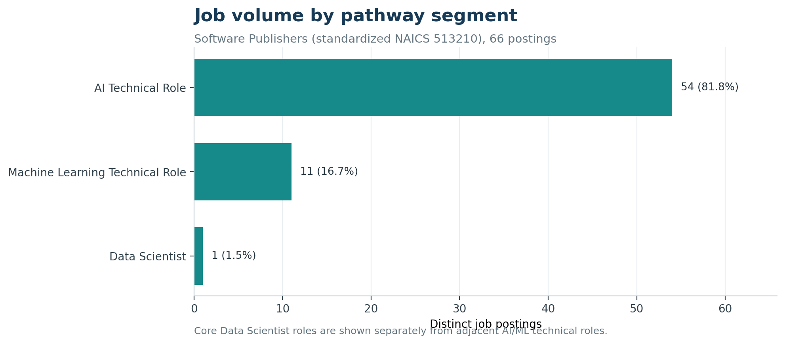
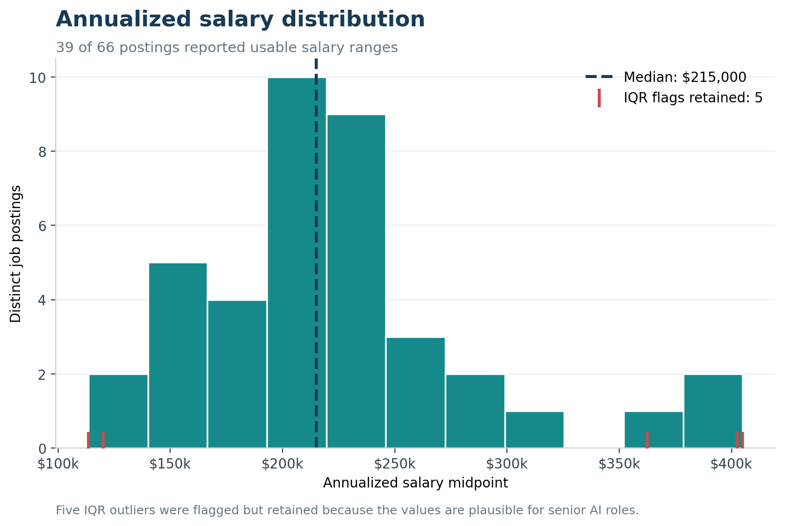
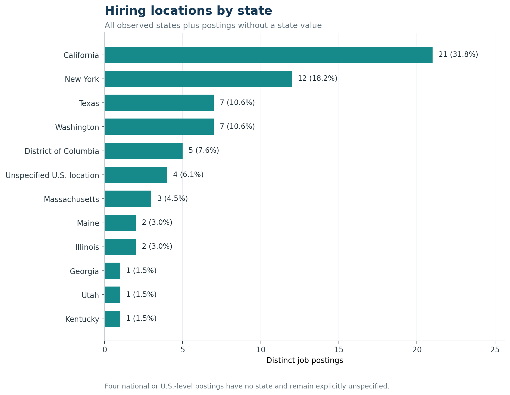
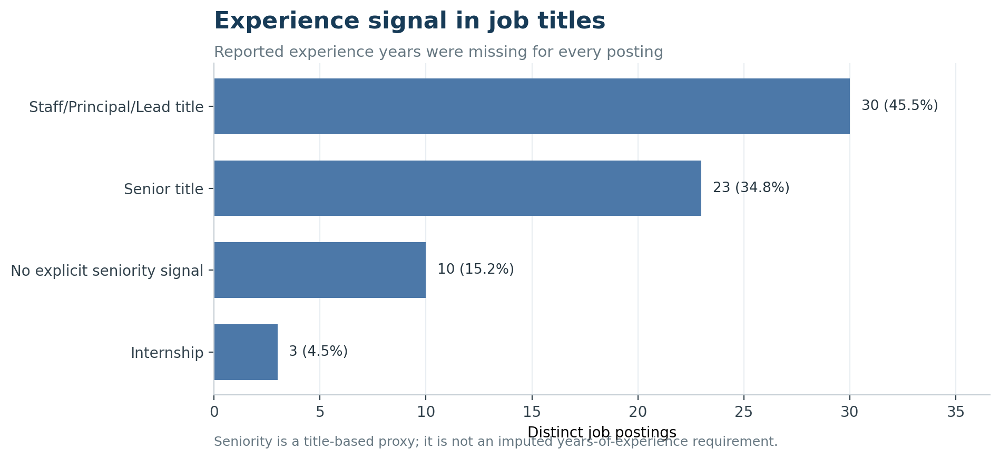
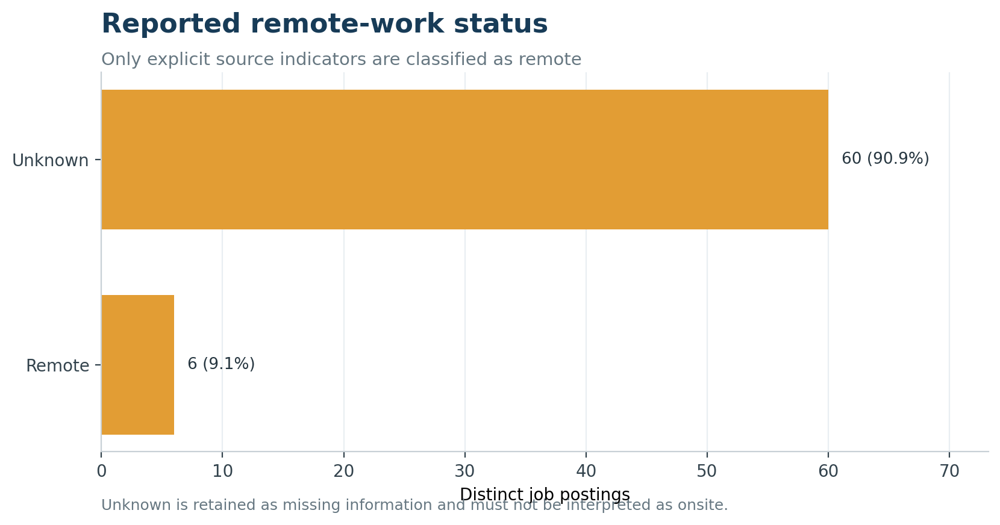
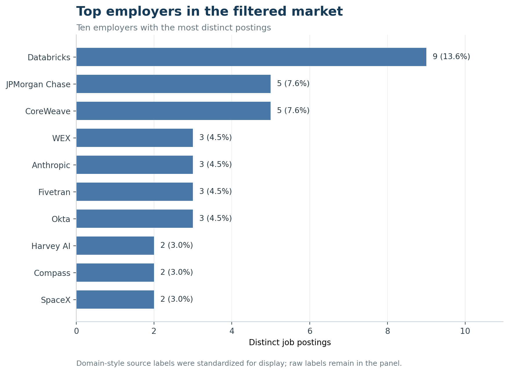
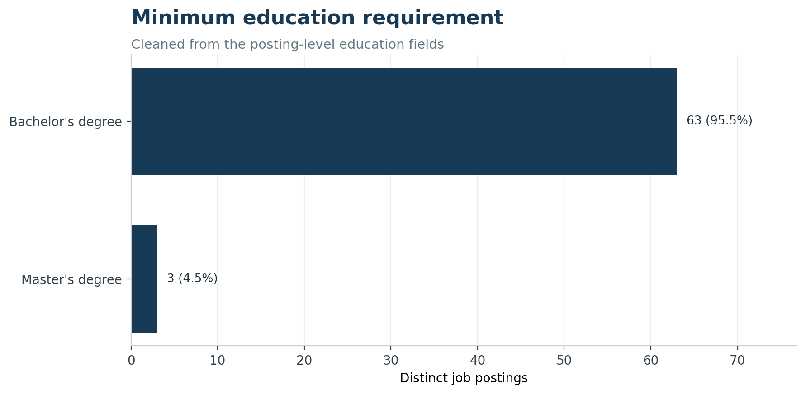

Market Baseline
Data Science and Adjacent AI/ML Roles in Software Publishers
Baseline at a glance
This page describes the 66 distinct postings remaining after the documented industry, pathway, date, and cleaning rules. The sample is a short observed snapshot—June 3 through July 21, 2026—within the January–July analysis window.
| Indicator | Baseline result |
|---|---|
| Core Data Scientist postings | 1 (1.5%) |
| Adjacent AI/ML technical postings | 65 (98.5%) |
| Senior or Staff/Principal/Lead title signals | 53 (80.3%) |
| Postings with a usable salary midpoint | 39 (59.1%) |
| Median annual salary midpoint | $215,000 |
| Explicitly remote postings | 6 (9.1%) |
| Remote status unknown | 60 (90.9%) |
The source stored the canonical Software Publishers name with raw code 513200. The analytical code is standardized to official 2022 NAICS 513210 under the documented procedure on the Data Preparation page (U.S. Census Bureau (2022)).
Job volume and pathway composition

The clearest market signal is scarcity of the exact target title. Only one posting qualified as a core Data Scientist role. Demand is much larger for adjacent implementation-oriented work: AI technical roles account for 54 postings and machine-learning technical roles account for 11. For career planning, this supports treating AI/ML engineering as a realistic adjacent pathway while continuing to label it separately from data science.
Salary distribution

Among the 39 postings with usable salary data, the annualized midpoint has a median of $215,000, a mean of $221,789, and a range from $113,500 to $405,000. The wide upper tail is consistent with the sample’s concentration in senior and staff-level roles. Five values fall outside the 1.5-IQR limits; they remain in the dataset because inspection showed plausible compensation for an internship at the low end and advanced AI roles at the high end. Salary conclusions apply only to the 59.1% of postings with usable reported pay.
Hiring geography

California leads with 21 postings (31.8%), followed by New York with 12 (18.2%). Together they represent half of the sample. Texas and Washington each have seven postings, and the District of Columbia has five. Four records describe a national or U.S.-level location without a usable state; they remain explicitly unspecified rather than being assigned to a state.
Experience requirements

The raw experience-year fields are missing for all 66 postings, so a conventional years-of-experience distribution cannot be reported. Explicit title language nevertheless shows that 53 postings (80.3%) are senior or Staff/Principal/Lead roles. Ten titles have no explicit seniority signal, and three are internships. This is a role-level signal, not a conversion to assumed years.
Remote-work reporting

Only six postings are explicitly marked remote. The other 60 are unknown, not confirmed onsite. Consequently, the defensible result is that at least 9.1% of the sample is explicitly remote; the dataset cannot support a true remote-versus-onsite market share.
Top employers

Databricks is the largest observed employer with nine postings (13.6%). JPMorgan Chase and CoreWeave each have five; WEX, Anthropic, Fivetran, and Okta each have three. Obvious domain-style source labels were normalized for this display only, while original company labels remain in the analytical panel. Employer rankings inherit the source’s industry assignments; the project did not independently reclassify each firm’s primary industry.
Education requirements

The cleaned minimum requirement is a bachelor’s degree for 63 postings (95.5%) and a master’s degree for three. This variable is much more complete than experience, remote, or skill fields and suggests that a bachelor’s degree is the dominant formal education threshold in this filtered sample.
Skills evidence
A market-wide top-skills chart would be misleading here. Only 10 of 66 postings (15.2%) contain a usable normalized skill: six through structured source fields and four through controlled description-keyword extraction. Individual skill counts never exceed two postings. The current skill table should be retained for transparency and later gap analysis, but it is not strong enough to characterize overall market demand without a richer source or improved description extraction.
What this baseline means
For this source and time period, the selected market is best characterized as a small, high-paying, senior-skewed AI/ML technical market rather than a broad entry-level Data Scientist market. The strongest actionable finding is the role mix: students targeting Software Publishers should evaluate adjacent AI/ML engineering readiness as well as exact Data Scientist titles. Salary and geography provide useful directional context; remote, experience-year, and skill conclusions remain constrained by source completeness.